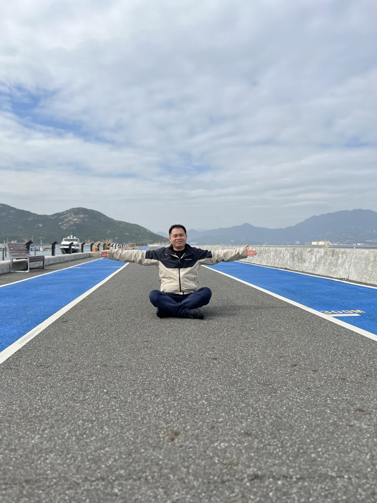

|

|
Xing Tang (唐兴)
I am currently a senior researcher at Intelligent Application Centre of Fit, Tencent.
Before that, I was a senior researcher at
Huawei Noah's Ark Lab before. I obtained my Ph.D. degree in Computer Science from The
Xidian University in 2016. I received the B.Eng degree from Xidian
University. My research interest focus on online advertising (CTR prediction,CVR estimation and ranking),
online marketing(LTV estimation,Uplift Modeling and Resource allocation), aiming to build an intelligent financial
platform.
|
|
Contact
Email : first_name dot last_name at hotmail dot com
OR shawntang at tencent dot com
|
|
Experience
Xidian University, China
Ph.D. in Computer Science
Sept. 2012 to Dec. 2016
Xidian University, China
Master in Computer Science
Sept. 2010 to Feb. 2012
Xidian University, China
Bachelor
Sept. 2006 to Jun. 2010
|
|
Education
Xidian University, China
Ph.D. in Computer Science
Sept. 2012 to Dec. 2016
Xidian University, China
Master in Computer Science
Sept. 2010 to Feb. 2012
Xidian University, China
Bachelor
Sept. 2006 to Jun. 2010
|
Publications
Learning Optimal Embedding Table for Click-through Rate Prediction
[pdf]
[slide]
Fuyuan Lyu*, Xing Tang*, Hong Zhu, Huifeng Guo, Yingxue Zhang, Ruiming Tang,
and Xue Liu
In Proceedings of the 31st ACM International Conference on Information and Knowledge Management
(CIKM) 2022
Memorize, Factorize, or be Naïve: Learning Optimal Feature Interaction Methods for CTR
Prediction
[pdf]
[slide]
[poster]
Fuyuan Lyu*, Xing Tang*, Huifeng Guo, Ruiming Tang, Xiuqiang He, Rui Zhang, and
Xue Liu
In Proceedings of the 38th IEEE International Conference on Data Engineering (ICDE) 2022
Encoder-Decoder Architecture for Supervised Dynamic Graph Learning: A Survey
[pdf]
Yuecai Zhu, Fuyuan Lyu, Chengming Hu, Xi Chen, and Xue Liu
arXiv preprint, 2022
Dual-flow Training Framework to Exploit Structured Sparsity
Tian Li, Jieru Zhao, Chaoqun Chu, Fuyuan Lyu, Xiaoqiao Xu, Mengqi Cao, Beilei
Sun, Zhezhi He, Minyi Guo, and Li Jiang
In Work-In-Progress sessions at the 2021 Design Automation Conference(DAC)
Cross-filter compression for CNN inference acceleration
[pdf]
Fuyuan Lyu, Shien Zhu, and Weichen Liu
arXiv preprint, 2020
|
|
Teaching
COMP303: Software Design, Teaching Assistant, 2020 Winter
|
|
Selected Awards
Wolfe Fellowship in Sci & Tech, 2019-2020
Grad Excellence Award of McGill University, 2019-2020
Zhiyuan Honor Degree of Engineering of Shanghai Jiao Tong University(1%),
2019
Zhiyuan Oversea Research Scholarship (1st class) of Shanghai Jiao Tong
University, 2019
Zhiyuan Outstanding Student Scholarship of Shanghai Jiao Tong
University(5%), 2019
Microsoft Intelligence Award , awarded to 4/438 participants in the 1st HACKxFDU
Hackathon, 2016.
|
|